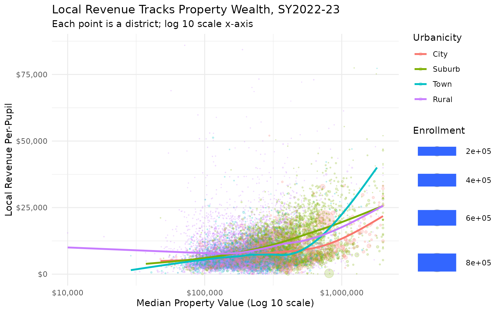
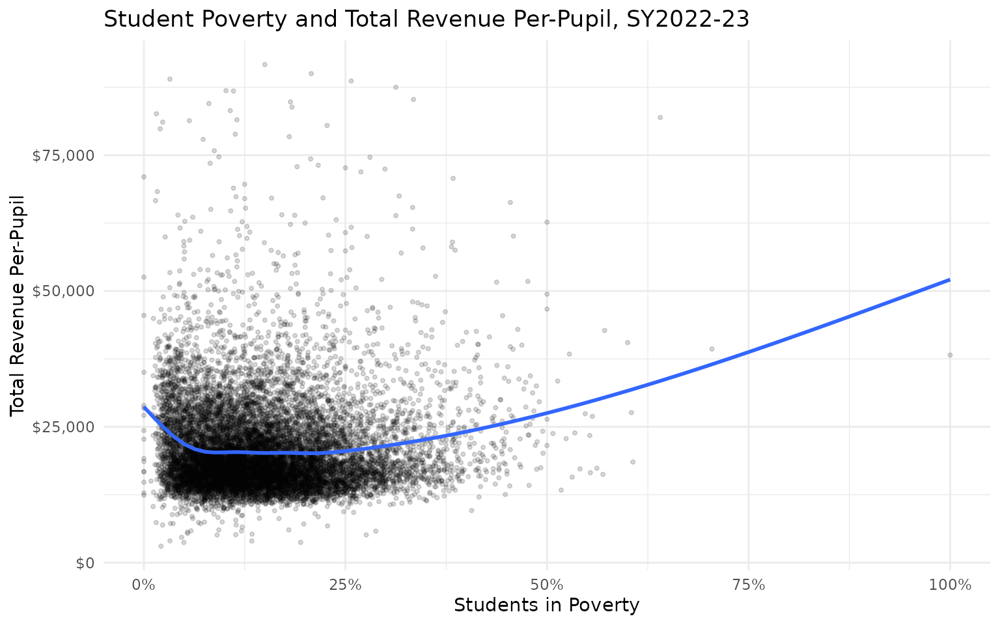
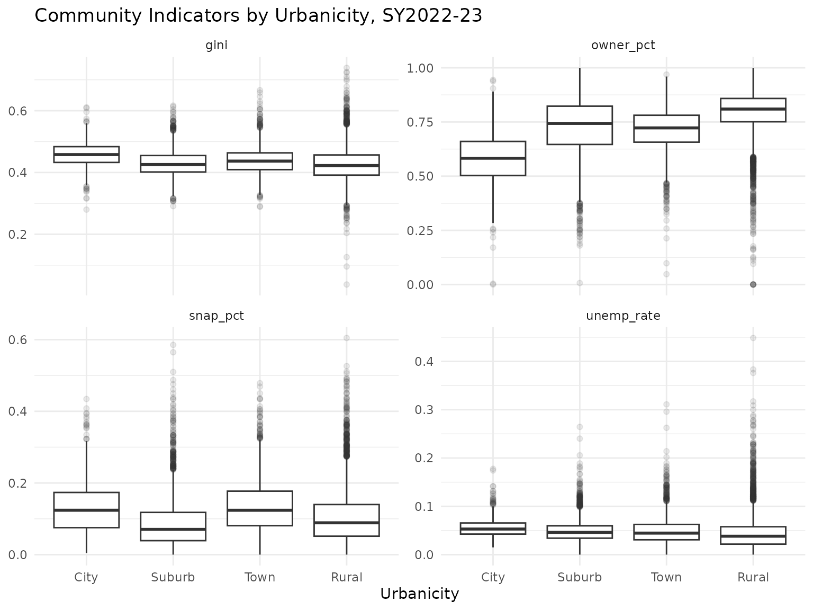
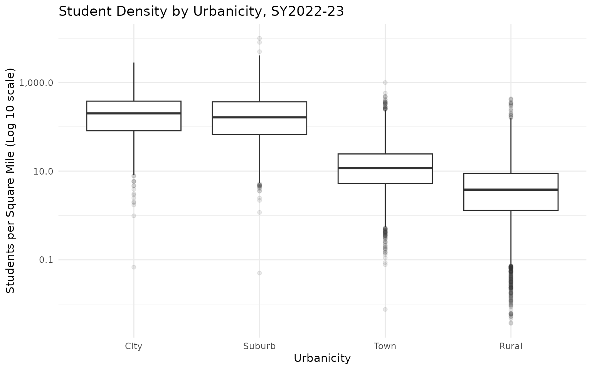

Community and Economic Context
Source:vignettes/articles/community-context.Rmd
community-context.RmdIntroduction
The communities that fund and attend public schools are deeply
connected to school finance. Alongside the F-33 finance items,
edfinr joins each district to community measures from the
American Community Survey (ACS) 5-Year Estimates, poverty estimates from
the Census Bureau’s Small Area Income and Poverty Estimates (SAIPE), and
district land area from the Census Bureau’s Gazetteer Files. This
article explores those variables and shows how to use them for a typical
analysis task: comparing districts’ fiscal capacity
(what a community can raise) with student need.
The community variables
All of these are in the skinny dataset. The dictionary lists them with their source table codes:
list_variables("skinny") |>
filter(source %in% c("5-Year ACS Survey", "Census Bureau SAIPE", "Census Bureau Gazetteer")) |>
select(name, source, description) |>
knitr::kable()| name | source | description |
|---|---|---|
| mhi | 5-Year ACS Survey | Median household income (B19013_001) |
| mean_hhi | 5-Year ACS Survey | Mean household income (aggregate household income / households) |
| mpv | 5-Year ACS Survey | Median property value (B25077_001) |
| adult_pop | 5-Year ACS Survey | Adult population (B15003_001) |
| ba_plus_pop | 5-Year ACS Survey | Adults with bachelor’s degree or higher (B15003_022 + B15003_023 + B15003_024 + B15003_025) |
| ba_plus_pct | 5-Year ACS Survey | Percent of adults with bachelor’s degree or higher |
| gini | 5-Year ACS Survey | Gini index of income inequality (B19083_001) |
| owner_pct | 5-Year ACS Survey | Owner-occupied share of occupied housing (B25003_002 / B25003_001) |
| snap_pct | 5-Year ACS Survey | Share of households receiving SNAP (B22003_002 / B22003_001) |
| unemp_rate | 5-Year ACS Survey | Unemployment rate (B23025_005 / B23025_003) |
| total_pop | Census Bureau SAIPE | Total population |
| student_pop | Census Bureau SAIPE | Student-aged population (5-17) |
| stpov_pop | Census Bureau SAIPE | Student-aged population in poverty |
| stpov_pct | Census Bureau SAIPE | Percent of students in poverty |
| land_area_sq_mi | Census Bureau Gazetteer | District land area in square miles (Gazetteer ALAND_SQMI; land only); NA for LEAs without a Census boundary (charters, ESAs, state-operated agencies) |
| s_per_sq_mi | Census Bureau Gazetteer | Students per square mile (enroll / land_area_sq_mi); NA, never Inf, where land area is zero or unavailable |
Two timing caveats before using them:
- ACS values are 5-year averages. The ACS estimates attached to a fiscal year summarize a five-year window, so they move slowly and lag sharp local changes (a plant closing, a housing boom). SAIPE poverty estimates are annual.
-
Estimates carry sampling error. ACS district-level
estimates, especially for small districts, have nontrivial margins of
error that
edfinrdoes not carry. Treat small-district differences ingini,snap_pct, orunemp_rateas noisy. -
SAIPE counts resident children, not enrolled
students.
stpov_pctmeasures poverty among children ages 5-17 who live within the district’s boundaries. Where many resident children attend charter, private, or neighboring schools – or where a charter LEA has no meaningful residential geography – the resident and enrolled populations can differ substantially.
The examples below use the most recent year:
us_2023 <- get_finance_data(yr = "2023", geo = "all")Median vs. mean household income
mhi (median) and mean_hhi (mean) are
different measures of community income. The mean is pulled upward by
high-income households, so the mean-to-median ratio is a quick screen
for skewed income distributions. This can be useful for identifying
communities where a small wealthy population skews the mean income above
the median income:
us_2023 |>
filter(!is.na(mhi), !is.na(mean_hhi), mhi > 0) |>
mutate(mean_to_median = mean_hhi / mhi) |>
filter(enroll >= 1000) |>
arrange(desc(mean_to_median)) |>
select(dist_name, state, enroll, mhi, mean_hhi, mean_to_median) |>
head(10)## # A tibble: 10 × 6
## dist_name state enroll mhi mean_hhi mean_to_median
## <chr> <chr> <dbl> <dbl> <dbl> <dbl>
## 1 Scarsdale Union Free School Dist… NY 4704 250001 606286. 2.43
## 2 Somerset Independent KY 1615 34754 83973. 2.42
## 3 Aspen School District No. 1 In T… CO 1572 97015 216770. 2.23
## 4 West Lafayette Com School Corp IN 2420 30111 66545. 2.21
## 5 Woodville Isd TX 1239 47886 103670. 2.16
## 6 Hillsborough City Elementary CA 1294 250001 523236. 2.09
## 7 Dyersburg TN 2613 51846 104847. 2.02
## 8 Bronxville Union Free School Dis… NY 1555 215726 432323. 2.00
## 9 Boling Isd TX 1146 71797 143800. 2.00
## 10 Beverly Hills Unified CA 3140 127472 250316. 1.96Fiscal capacity: property wealth and local revenue
Local revenue depends heavily on the property tax base. Plotting per-pupil local revenue against median property value shows the relationship between the proxy for local fiscal capacity (MPV) and actual local revenue.
One caution before leaning on mpv as a capacity measure:
it is the ACS median value of owner-occupied homes, a proxy for
residential property wealth only. Formal fiscal-capacity
measures use assessed (or equalized) valuation per pupil, which also
counts commercial, industrial, and utility property and is scaled by
enrollment. If your state publishes assessed valuation per pupil, use
it; mpv is a nationally consistent fallback.
us_2023 |>
filter(!is.na(mpv), !is.na(rev_local_pp), mpv > 0, rev_local_pp > 0,
!is.na(urbanicity)) |>
ggplot(aes(x = mpv, y = rev_local_pp, size = enroll, color = urbanicity)) +
geom_point(alpha = 0.2) +
geom_smooth(se = FALSE) +
scale_x_log10(labels = scales::label_dollar()) +
scale_y_continuous(labels = scales::label_dollar()) +
scale_size_area(max_size = 10) +
labs(
title = "Local Revenue Tracks Property Wealth, SY2022-23",
subtitle = "Each point is a district; log 10 scale x-axis",
x = "Median Property Value (Log 10 scale)",
y = "Local Revenue Per-Pupil",
color = "Urbanicity",
size = "Enrollment"
) +
theme_minimal()
Student need: poverty and total revenue
The SAIPE-based stpov_pct measures the share of
school-aged children in poverty. Whether total revenue rises with
poverty – that is, whether state and federal aid more than offset weaker
local capacity – varies sharply by state. Here is the national
picture:
us_2023 |>
filter(!is.na(stpov_pct), !is.na(rev_total_pp)) |>
ggplot(aes(x = stpov_pct, y = rev_total_pp, size = enroll)) +
geom_point(alpha = 0.15, size = 0.8) +
geom_smooth(se = FALSE) +
scale_x_continuous(labels = scales::label_percent()) +
scale_y_continuous(labels = scales::label_dollar()) +
scale_size_area(max_size = 10) +
labs(
title = "Student Poverty and Total Revenue Per-Pupil, SY2022-23",
x = "Students in Poverty",
y = "Total Revenue Per-Pupil",
size = "Enrollment"
) +
theme_minimal()
The national trend masks significant variation at the state level. It also compares nominal dollars: high-poverty urban districts sit disproportionately in high-wage labor markets, so a dollar buys less there than in a low-cost rural district. Cost-adjusted, within-state analyses can and do reach different conclusions than this raw national scatter. See the “CWIFT” article for the labor-cost adjustment.
Other indicators
gini (income inequality), owner_pct
(owner-occupied housing), snap_pct (SNAP receipt), and
unemp_rate (unemployment) round out the community picture.
They are most useful as controls or descriptive context; their
distributions differ enough across urbanicity to be worth checking
before pooling:
us_2023 |>
filter(!is.na(urbanicity)) |>
select(urbanicity, gini, owner_pct, snap_pct, unemp_rate) |>
pivot_longer(-urbanicity, names_to = "indicator", values_to = "value") |>
filter(!is.na(value)) |>
ggplot(aes(x = urbanicity, y = value)) +
geom_boxplot(outlier.alpha = 0.1) +
facet_wrap(~indicator, scales = "free_y") +
labs(
title = "Community Indicators by Urbanicity, SY2022-23",
x = "Urbanicity", y = NULL
) +
theme_minimal()
Geographic sparsity: land area and student density
urbanicity classifies districts into four categories,
but districts within the same category still span a wide range of
physical sparsity. s_per_sq_mi (students per square mile,
derived from land_area_sq_mi) offers a continuous
counterpart: a rural district serving a compact town looks different
from one spread across a sparsely populated county, even though both are
labeled “Rural.”
Three caveats before using it:
-
NAby design, not missingness. Districts without a Census boundary – such as charter schools – have no Gazetteer file match, soland_area_sq_miands_per_sq_miareNAfor them in every year. -
NA, neverInf. Whereland_area_sq_miis zero or unavailable,s_per_sq_miisNArather than an infinite or undefined ratio. - Vermont coverage gap. Vermont’s Act 46 district consolidation left many post-consolidation LEAs without a matching Gazetteer boundary; match rates there run roughly 7-12% for those years, versus 97%+ elsewhere. Restrict Vermont density analyses to FY2012-FY2015 or FY2022 onward.
Density varies by orders of magnitude across urbanicity categories, so a log scale can be useful:
us_2023 |>
filter(!is.na(urbanicity), !is.na(s_per_sq_mi)) |>
ggplot(aes(x = urbanicity, y = s_per_sq_mi)) +
geom_boxplot(outlier.alpha = 0.1) +
scale_y_log10(labels = scales::label_comma()) +
labs(
title = "Student Density by Urbanicity, SY2022-23",
x = "Urbanicity", y = "Students per Square Mile (Log 10 scale)"
) +
theme_minimal()